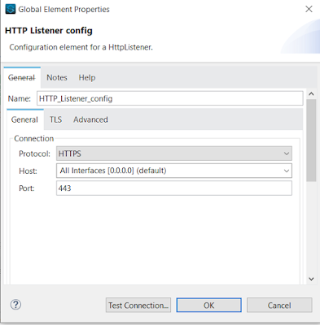

In today’s world security is a big concern, talking about APIs the SSL is an industry standard which is a must to secure your Apis.
To Enable SSL on your HTTP listeners its very simple and straight forward process, we have to generate the certs first and then publish those certs to your mule apps keystore. Please follow the below process –
- Generating the SSL Certificates Locally
To generate the SSL Certs locally we have to use the keytool utility which is provided in Java by default. You have to open a command line and type in the below commands –
keytool -genkey -keyalg RSA -alias selfsigned -keystore keystore.jks -storepass password -validity 365 -keysize 2048
This will generate java style keys jks and if you want to convert it into pkcs format please use the below command –
keytool -importkeystore -srckeystore keystore.jks -destkeystore keystore.jks -deststoretype pkcs12
2. In your Mule Apps HTTP component please make configurations as mentioned in below screenshots –
{kind=link}

3. use postman to hit the url – https://localhost/helloplease dont forget to disable the ssl verification in postman settings
{kind=link}